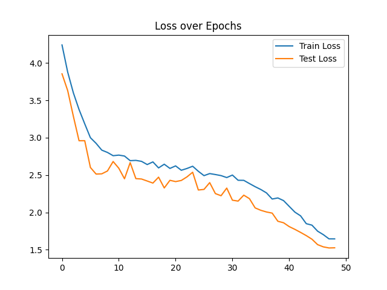
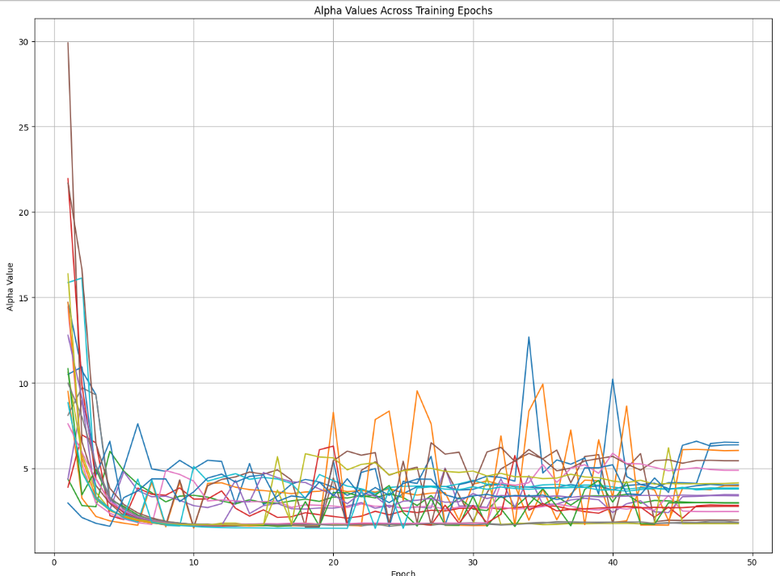

Accuracy over Epochs
Training accuracy gradually increases as the model learns. Test accuracy also climbs but may fluctuate—especially in early epochs—indicating generalization adjustment. Both eventually align above 75%, showing convergence.

Loss over Epochs
Loss steadily drops, showing consistent learning. The test loss staying lower than training loss suggests regularization (like Mixup) and label smoothing are helping generalize better, preventing overfitting.

Alpha Evolution
Alpha values (from weightwatcher's spectral analysis) decrease rapidly in early epochs, then stabilize between 2–5 for most layers—ideal for generalization. Occasional spikes later hint at overfitting in specific layers.